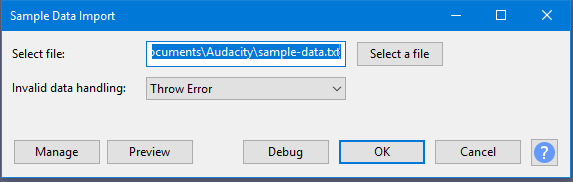

Sample Data Import
- The file MUST be plain ASCII text, and values should be separated by spaces, tabs or line-breaks.
- The file name must have a '.txt' file extension.
- Accessed by:
- 
{kind=link}
File name
The name of the file to import the data from. A file name extension of .txt is required.
| The file to be imported must contain only plain ASCII text. Files other than plain ASCII text are NOT SUPPORTED. |
File location (path to file)
This is the directory (folder) where Sample Data Import will look for the named text file. If the file cannot be found, the plug-in will abort and an error will be shown.
The default directory is the Home directory. This is normally:
- Windows: <root>\Users\<username>
- Mac: /Users/<username>
- Linux: /home/<username>
To select a different output folder, enter the full path name, for example D:\Samples Text Files.
On Linux and Mac, the abbreviation ~/ may be used for the home directory.
Invalid data handling
The specified text file should normally contain numbers only (see: Data Format below). If invalid data is present in the file (non-numeric text), there are two ways in which this invalid data may be handled:
- Throw error (default):
- Any text that cannot be read as a numeric value will abort the effect and display an error message. The error message will attempt to display the invalid text.
- Read as zero:
- Any text that cannot be read as a numeric value will produce a zero (silent) sample value. This may be useful when attempting to read data that has been generated by a third party application that could, for example, produce "infinite" values.
Data format
Sample data must be plain ASCII text only and should be numeric values only. The decimal separator must be a period. The values are read as 32-bit float numbers, where a range of +/- 1.0 represents 0 dB (full scale).
Values must be separated by one of:
- One or more spaces.
- One or more tabs.
- One or more line breaks.
- Any combination of the above.
Assuming that no errors are encountered, data import terminates at the end of the file.
Number of channels
If a stereo track is selected before opening the effect, then the data is assumed to be stereo, otherwise the data will be treated as mono.
Stereo data must be interleaved (alternate left/right sample values).
Data comments
Comments may be included in the file by preceding the comment with a semicolon. All text between a semicolon and the end of the line is ignored. Files already exported from "Sample Data Export" that are compatible with Sample Data Import except for their text headers can thus be imported perfectly with the default "Throw error" handling by preceding each header line with a semicolon.
Obtaining suitable data
One of the simplest ways to produce data in a suitable format is to use the Sample Data Export effect. Alternatively, data may be generated from third party applications, from spreadsheet data, or even manually typed in a text editor.
Obtain data from 'Sample Data Export'
To obtain suitable data from Sample Data Export, ensure the following settings:
- Measurement scale: "Linear"
- File data format: "Sample List (txt)"
- Include header information: "None"
- Optional header text: none (empty)
- Channel layout for stereo: "L-R on Same Line" or "Alternate Lines"
- File name: must end with ".txt" or leave empty for ".txt" to be added automatically
Buttons
Clicking on the command buttons give the following results:
- gives a dropdown menu enabling you to manage presets for the tool and to see some detail about the tool. For details see Manage presets.
- applies the effect to the selected audio with the current effect settings.
- aborts the effect and leaves the audio unchanged.
 brings you to the appropriate page in the Manual, this page.
brings you to the appropriate page in the Manual, this page.
Examples
The data below represents two cycles of a 1000 Hz mono sine wave, amplitude 0.5:
;This is a comment and will be ignored.
0.07100 0.14056 0.20727 0.26978 0.32682 0.37724 0.42001 0.45428 0.47933 0.49468 0.50000 0.49518 0.48034 0.45575 0.42193 0.37957 0.32951 0.27277 0.21050 0.14397 0.07452 0.00356 -0.06747 -0.13713 -0.20402 -0.26677 -0.32411 -0.37489 -0.41807 -0.45278 -0.47831 -0.49415 -0.49997 -0.49566 -0.48131 -0.45721 -0.42384 -0.38188 -0.33218 -0.27575 -0.21373 -0.14738 -0.07804 -0.00712 0.06394 0.13370 0.20076 0.26375 0.32139 0.37252 0.41611 0.45125 0.47726 0.49359 0.49992 0.49612 0.48226 0.45864 0.42571 0.38416 0.33483 0.27871 0.21694 0.15078 0.08156 0.01068 -0.06040 -0.13027 -0.19749 -0.26072 -0.31866 -0.37014 -0.41412 -0.44971 -0.47618 -0.49301 -0.49984 -0.49655 -0.48319 -0.46004 -0.42757 -0.38643 -0.33747 -0.28166 -0.22015 -0.15417 -0.08507 -0.01425
The data below represents a stereo track with a ramp from 0 to 1 in the left channel, and a ramp from 0 to -1 in the right channel:
0.00000 -0.00000
0.10000 -0.10000
0.20000 -0.20000
0.30000 -0.30000
0.40000 -0.40000
0.50000 -0.50000
0.60000 -0.60000
0.70000 -0.70000
0.80000 -0.80000
0.90000 -0.90000
1.00000 -1.00000